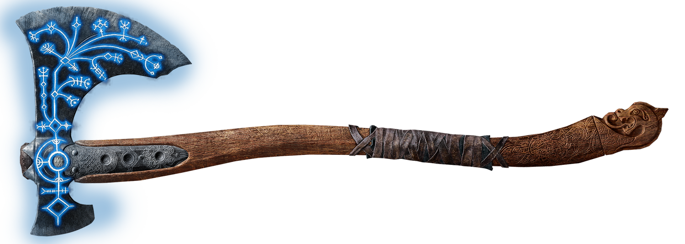
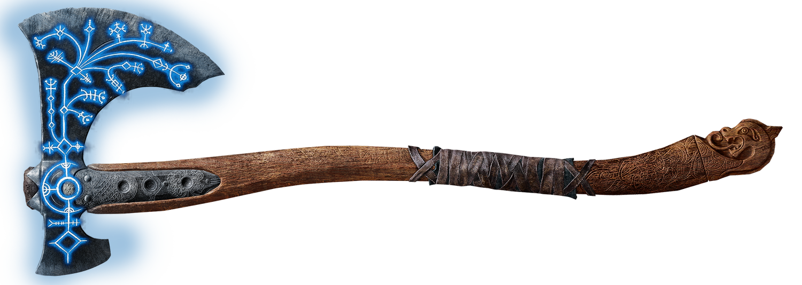

Общее описание
God of War II (с англ. — «Бог Войны 2») — видеоигра в жанре hack and slash, разработанная компанией SIE Santa Monica Studio. Вторая часть в серии игр God of War и шестая часть в хронологическом порядке. Была выпущена весной 2007 года для консоли PlayStation 2 (далее PS2). Игра основана на греческой мифологии и, вследствие этого, действие игры проходит в Древней Греции. Игрок управляет главным героем Кратосом, новым богом войны, который убил первого бога, Ареса. Зевс, король богов-олимпийцев, предаёт Кратоса, лишает его божественности и убивает его. Однако из Подземного мира Кратоса спасает Гея, которая просит его найти Сестёр Судьбы, поскольку они могут позволить ему путешествовать во времени, предотвратить его убийство и отомстить Зевсу.
Геймплей похож на оный в первой части и сосредоточен на сериях комбо-ударов, достигаемых с помощью основного оружия игрока, клинков Афины и вторичного оружия, которым является любое оружие, найденное по ходу игры. В игровом мире присутствует большое количество QTE-event’ов. В качестве альтернативных вариантов боя игрок может использовать до четырёх магических атак и способности к усилению. В God of War II есть головоломки и элементы платформера.
God of War II признана одной из лучших игр для PS2 и одной из лучших экшн-игр 2007 года и стала игрой года на PlayStation 2 на церемонии Golden Joystick AwardsПерейти к разделу «#Восприятие». Игра была самой продаваемой игрой в Великобритании в течение недели после её выпуска. Было продано 4,24 млн копий God of War II по всему миру.
В ноябре 2009 года на PlayStation 3 (далее PS3) и в составе God of War Collection вышла обновлённая God of War II с улучшенной графикойПерейти к разделу «#Выпуск». 28 августа 2012 года была снова обновлена и выпущена в составе God of War Saga.
Повествование сюжета
Действие God of War II происходит вскоре после событий God of War: Ghost of Sparta, но более чем через 13 лет после событий God of War; Кратос после победы над Аресом стал новым Богом войны, но, к сожалению, другие боги не приняли его из-за его безжалостного обращения с другими греческими городами-государствами. Кратоса до сих пор преследуют воспоминания о делах из его прошлого, когда он работал под началом Ареса. Он находит удовольствие единственным доступным ему способом, возглавляя и помогая своей спартанской армии в завоевании Греции. Афина умоляет Кратоса остановиться, говоря ему, что она не может больше защищать его от гнева Олимпа и что он не должен поворачиваться к ней спиной, потому что это она сделала его богом. Кратос отвечает, что он ничего ей не должен, и спускается в битву при Родосе, чтобы помочь своей спартанской армии.
Кратос присоединяется к битве как Бог и начинает разрушать город Родос. Через некоторое время Кратос замечает орла, которого Кратос считает замаскированной Афиной. Птица лишает его божественного роста, вливая их в Колосса Родосского и оживляя его, чтобы убить Кратоса.
После затяжного конфликта с металлическим гигантом, бушующим по всему городу, Зевс предлагает Кратосу Клинок Олимпа, который сам Зевс использовал для победы в Великой войне между богами и титанами. По велению Зевса Кратос наполняет Клинок своей божественностью, делая его смертным, но позволяя ему уничтожить Колосса изнутри. Однако вскоре Кратос оказывается смертельно раненным после того, как его раздавила отрубленная падающая рука статуи.
Кратос понимает, что он должен вернуть Клинок Олимпа, чтобы спасти себя. Когда он медленно встает и хромает к мечу, Зевс раскрывает себя как Орла, укравшего его силу, и он предал Кратоса, чтобы его судьба не была такой же, как у Ареса. Затем Зевс вонзает Клинок Олимпа в грудь Кратоса, убивая его после того, как он отказывается вечно служить богам, и уничтожая всех спартанцев и солдат Родоса.
Однако, когда Кратоса тащат к вечным мучениям в Подземном мире, его спасает Гайя, мать Титанов и рассказчик франшизы, которая предлагает союз. Кратос, у которого все еще есть некоторые оставшиеся силы, сбегает из Подземного мира, и Гайя велит ему найти Сестер Судьбы, чтобы изменить свое прошлое, вернуть себе свои божественные силы, а также свой статус бога войны и затем предотвратите его предательство и убейте Зевса. Она дает Кратосу помощь волшебного коня Пегаса, чтобы преодолеть расстояние до сестер.
Кратос и Пегас после обхода горы, на которой обитают Титан Тифон и бывший Титан Прометей, начинают лететь к Острову Творения, но снова подвергаются нападению Грифонов и Воронов, которым помогает Темный Всадник. Темному Всаднику удается врезаться в Пегаса, отправляя лошадь на верную смерть, но Кратос контратакует, прыгая на Темного Грифона, убивая Темного Всадника Копьем Судьбы и убивая Темного Грифона, воткнув копье в его шею, когда Кратос ныряет на Остров Творения внизу.
Исследуя остров, Кратос спрашивает Гайю, почему она предлагает ему помощь. Затем Гайя рассказывает историю Зевса и того, как Кронос, отец Зевса, съел всех его детей, чтобы предотвратить пророчество о том, что один из его собственных детей восстанет против него, и как Рея, мать Зевса, спасла своего ребенка и отправила его в остров, который на самом деле был Гайей, Титаникой-Матерью Земли и бабушкой Зевса, и Гайя воспитывала Зевса, пока он не вырос и не стал мужчиной и не отомстил Кроносу и всем Титанам. Затем Кратос встречает таких, как Тесей, от которого он убивает и получает Ключ Хранителя Коней и Коней Времени (подарок Сестрам Судьбы от Кроноса в попытке изменить свою судьбу), Персей, которого он жестоко убивает и берет свой отражающий щит для прогресса, капитан с корабля в начале God of War и король варваров, которого он обезглавил в оригинальном God of War, у которого он берет Варварский молот. Кратос также встречает изможденного и обезумевшего Икара, у которого он берет свои крылья, и королеву Горгон Эвриалу, от которой он получил голову Эвриалы, обезглавив.
Кратос приземляется на Титан Атлас под землей и пытается связаться с ним. Сначала Атлас возмущается видом Спартанца и отказывается помочь Кратосу, стремясь сокрушить человека за его новое заключение с момента их последней встречи в God of War: Chains of Olympus. Однако Кратосу удается убедить Атласа помочь ему, чтобы он мог изменить свою судьбу и убить Зевса. Атлас, заинтригованный целью Кратоса, рассказывает ему о создании Клинка Олимпа: когда началась Великая война между богами и титанами, Зевс вскоре создал мощное оружие под названием Клинок Олимпа, чтобы положить конец Великой войне и вместе с Клинок изгнал титанов в глубины Тартара. Когда Титаны были побеждены Богами, они были наказаны и унижены, и они хотят, чтобы Кратос помог им отомстить. Когда Титан принимает предложение, он дает Кратосу новую силу, называемую Землетрясением Атласа, и помогает ему вернуться на поверхность, чтобы он мог продолжить свои поиски. Достигнув поверхности, он убивает Кракена и пробуждает Феникса, чтобы тот полетел к Храму Судьбы своим желанием отомстить за Зевса и знаниями, полученными от одного из его товарищей-солдат о том, как Зевс разрушил Спарту, действует как гнев, который помогает ему продолжать его квест. Наконец, достигнув Тронного зала, Кратос выражает твердое желание изменить свою судьбу и судьбу Зевса, короля богов Олимпа, после чего сестры отказывают ему в проходе. Затем Кратос противостоит Лакесису.
После ужасной битвы Кратос становится свидетелем того, как средняя сестра Атропос выходит из побежденного Лакесиса, возвращая Кратоса в прошлое, в самый момент его битвы.
Персонажи и их оружие

Кратос - главный герой игры. В начале God of War II Кратос стал Богом войны после победы над Аресом, но не освободившись от мучений, его печаль переросла в ненависть и гнев к богам. Он обращается к своей смертной армии Спарты, чтобы вести войну с городами на землях Греции, что вызывает гнев Зевса и других богов. Вскоре он обнаруживает, что Зевс предал его и превратил в смертного, а его силы отняли у него. Затем Кратос должен отправиться к Сестрам Судьбы, чтобы отомстить, вернуть свои божественные силы и уничтожить Зевса раз и навсегда.
Оружие: Клинки Афины, Молот варваров, Копье Судьбы, Клинок Олимпа.
Магия: Ярость Посейдона, Проклятие Тифона, Ярость Кроноса, Голова Эвриалы, Землетрясение Атласа.
Реликвии: Трезубец Посейдона, Ярость Титанов, Амулет Судьбы, Золотое руно, Крылья Икара, Череп воина, Ключ от барана.
Афина - Богиня мудрости, оборонительной войны и промышленности, а также девтерагонист. Хотя Афина была постоянным спутником в первой игре, она появляется только три раза; чтобы предупредить Кратоса, что его действия вызывают недовольство других богов, направляя себя через статую, и спасти Зевса, встав на пути смертельного удара Кратоса.
Как богиня Войны и Мудрости, Афина была одним из самых могущественных богов на Олимпе; с большим разнообразием способностей она была такой же могущественной (если не более могущественной), как Арес, ее соперник.
- Астральная проекция: после того, как она пожертвовала собой ради Зевса, Афина смогла вернуться в астральной форме, чтобы вести Кратоса. По ее словам, это также дало ей другой взгляд на мир и заставило ее «наконец-то увидеть правду».
- Бессмертие: Как и все олимпийцы, Афина была бессмертной, неспособной стареть или умереть от естественных причин или смертоносного оружия. Однако божественное оружие, такое как Ящик Пандоры и Клинок Олимпа, а также другие олимпийцы, боги, Титаны или Первородные могли причинить ей вред и убить.
- Неуязвимость: Как и все олимпийцы, Афина была неуязвима и не могла быть повреждена обычным оружием.
- Владение объектом: Ее любимый метод общения со своими слугами и подданными заключался в том, чтобы завладеть статуей, которая представляла ее. Она делала это на протяжении всего сериала, чтобы направлять Кратоса.
- Наделение силой: Афина смогла наделить своих слуг невероятной силой, как ей было показано с Кратосом, поскольку она дала ему Ярость богов. Однако ее величайшим подвигом было присвоение Кратосу титула бога войны, что дало ему силы бога.
- Заклинание силы: Афина могла вызывать магию, такую как сила Надежды. Эта сила была достаточно мощной, чтобы полубог и, возможно, могущественный смертный, обладавший этой силой, мог убить могущественных богов. Надежда была сильнее, чем даже зло, Страх. Например, Зевс был самым могущественным богом среди олимпийцев, и даже он был убит этой силой.
- Создание оружия: как богиня войны, Афина могла создавать невероятное оружие войны, когда она была жива и когда она была в своей астральной форме. Этим оружием были Клинки Афины и Клинки Изгнания. Возможно, она также создала Клинок Богов, поскольку он был найден в ее городе, и клинок держала ее статуя. Она также носила два меча на бедрах, которые она использовала в бою.
- Полет: она на самом деле показала эту способность в своей астральной форме, но, вероятно, у нее была эта способность, когда она была жива. Учитывая тот факт, что она смогла достичь Вершины Жертвоприношения, можно предположить, что она действительно обладала этой способностью.
- Телекинез: в первой игре, когда Кратос пытался покончить жизнь самоубийством, Афина использовала эту способность и поставила его на твердую землю. Другой пример был, когда она подняла Пандору к Кратосу.
- Неосязаемость: Находясь в астральной форме, Афина могла проходить через объекты по своему желанию и могла становиться осязаемой по желанию.
- Пирокинез: Учитывая то, что ее оружие было наполнено огнем, и тот факт, что бог Войны обладал этой способностью, вполне вероятно, что у нее также были пирокинетические способности.
- Сверхчеловеческая сила: Как бог, она была намного сильнее любого смертного и даже сильнее большинства полубогов. Она показала, что способна блокировать удар Клинка Олимпа, пока Кратос владел им, и даже смогла сначала оттолкнуть его.
- Божественная Мудрость: Будучи Богиней Мудрости, она обладала высоким гениальным уровнем интеллекта. Ее исключительный интеллект позволял ей делать следующее: решать проблемы и головоломки, придумывать отличные идеи и планы, побеждать своих противников, выяснять вопросы или не столь очевидные причины и направлять людей. Во время боя большую часть времени Афина использовала свой интеллект, а не чистую силу (за исключением ее боя с Кратосом). В греческой мифологии Афина всегда побеждала Ареса в бою.
- Сверхчеловеческая выносливость: как бог, она обладала невероятной выносливостью и могла продолжать сражаться, не уставая.
- Сверхчеловеческая скорость: как бог, она обладала скоростью, превосходившей скорость любого смертного и большинства полубогов. Однако она была не такой быстрой, как Гермес.
- Изменение формы: основываясь на том факте, что Кратос предположил, что орел, напавший на него на Родосе, был Афиной (позже выяснилось, что это был Зевс), можно было с уверенностью предположить, что она могла принимать любую форму, которую считала подходящей.

Гейя - мать Титанов, которая помогает Кратосу отомстить Зевсу. Позже она предает Кратоса, в результате чего Кратос отрубает ей руку. Кратос убивает ее после последовавшей борьбы между Кратосом и Зевсом внутри ее тела, в результате чего ее сердце было разрушено.
- Всеведение: она также может считаться обладательницей всеведения, поскольку она является рассказчиком игр.
- Геокинез: Как изначальная и олицетворенная земля, Гайя имеет абсолютный контроль и манипулирует камнями и растениями мира.
- Сверхчеловеческая сила: Как Титан, она обладает сверхчеловеческой силой.
- Сверхчеловеческая стойкость: как Титан. она обладала сверхчеловеческой стойкостью.
- Телепатия: Кажется, она также обладает способностью общаться во времени, поскольку она ожидала Кратоса во время первой Титаномахии, хотя это было за столетия до рождения Кратоса.
- Исцеляющий фактор: Она также обладает значительными регенеративными способностями, так как смогла отрастить руку, отрубленную ей Кратосом.
- Бессмертие: Как Изначальная, она бессмертна.
Последний Спартанец был невероятно могущественным для смертного, поскольку Кратос считал его достаточно высоко ценимым, чтобы возглавить спартанское вторжение на Родос и защитить Спарту. Во время битвы Кратоса и Последнего спартанца воин оказался проблемой даже для Призрака Спарты, несмотря на то, что был вооружен только мечом и щитом. Он также оказался очень стойким, так как смог пережить нападение Зевса, когда он закончил битву на Родосе, хотя он был ближе всех к Царю богов. Он также смог пережить прямое нападение Зевса на Спарту, хотя Царь богов использовал всю свою божественную силу. Во время битвы с Кратосом он даже смог пережить несколько ударов Клинков Афины Кратоса.
Примечательно, что спартанец не только пережил нападение Зевса на Спарту, но и пережил монстров, зверей и головоломки, которые защищали Остров Творения. Ему даже удалось добраться до того же момента, что и Кратос, в то же время, несмотря на то, что он начал то, что, должно быть, произошло через несколько недель или месяцев. Однако это может быть возможно, потому что Кратос и другие могущественные воины были на острове, убили большинство монстров и решили половину головоломок, что немного облегчило путешествие «Последнего спартанца».
Однако, согласно роману God of War II, Последний Спартанец прибыл на Остров Творения раньше Кратоса, что делает его подвиги поистине невероятными для такого смертного, как он. Учитывая, что он столкнулся с Кратосом в противоположном конце комнаты, можно сделать вывод, что Последний Спартанец пробивался совершенно другим путем, чем Кратос во время их экспедиции. Если это правда, это говорит о способностях Последнего Спартанца, поскольку Сестры Судьбы уединились таким образом, чтобы сделать их как можно более недоступными для любого существа, когда-либо встретившегося с ними лично, а это означает, что он должен был превосходить полчища злобных монстров и смертоносных ловушки и не воспользовавшись собственным прогрессом Кратоса. Его навыки в бою и выживании, кажется, соперничают с навыками Персея или Короля варваров. Согласно Кратосу в God of War (2018), Последний спартанец и другие спартанцы были великими воинами и обучались с самого рождения.
Последний спартанец также был компетентен в других задачах, поскольку он мог управлять городом для выполнения архитектурных обязанностей. Он также умел обращаться с оружием, так как позаботился об оружии Спарты для Кратоса, которое было в идеальном состоянии.
Лакесис - средняя (матрона) из трех Сестер Судьбы носит одеяние с перьями и крылья вместе с посохом. Она издевается над Кратосом, говоря ему, что она была ответственна за решение как о поражении Титанов в Великой войне, так и за то, что позволила Кратосу добраться до сестер. Она отказывается принять Кратоса и говорит ему, что он потерпит неудачу в своем стремлении изменить свою судьбу.
Силы и способности
- Бессмертие: как греческая богиня, она бессмертна, что означает, что она не стареет и невосприимчива к болезням и токсинам. Убить ее может только достаточно мощное оружие или чрезвычайно сильное существо.
- Сверхчеловеческая ловкость: Лакесис доказал свою ловкость выше человеческого пика. Она смогла с легкостью уклониться от Кратоса.
- Сверхчеловеческая выносливость: будучи богиней, Лакесис прилагает огромные усилия, чтобы вымотать ее.
- Сверхчеловеческая стойкость: Лакхесис была в состоянии противостоять огромным и мощным атакам, а также ее собственным отраженным атакам.
- Полет: у Лакесиса из спины росли крылья, и он использовал их, чтобы парить над землей или летать.
- Манипуляция временем: Сестры могли путешествовать во времени, используя Ткацкий Станок Судьбы, который мог переносить их в нужное время и место по их выбору, а также управлять временем для других.
- Манипуляция вероятностью: Согласно Лакесису, именно она решила, что олимпийцы победят Титанов в Первой титаномахии, именно она позволила Кратосу убить Ареса, и именно она позволила ему пережить множество опасностей Остров Творения.
- Магия: Лакесис смогла выстрелить зелёной стрелой с кончика своего посоха. Она также могла призывать столбы той же энергии, чтобы поражать своих врагов.
Атропос - Старейшая (старуха) Сестра Судьбы, которая была внутри Лахезиса, пока не отделилась, чтобы сразиться с Кратосом. Она высмеивала попытку Кратоса изменить свою судьбу, продемонстрировав свою силу, изменив событие из первого Бога войны и попытавшись уничтожить Клинок богов, чтобы Кратос умер от руки Ареса. Кратос вынужден сражаться в своем прошлом (на заднем плане бушует финальная битва первой игры), чтобы победить ее и сохранить свое существование.
- Хронокинез: Атропос мог путешествовать во времени, используя зеркала Судеб. Таким образом она могла изменить прошлое и даже могла тащить за собой людей через зеркало.
- Когти: у Атропоса были длинные когти, которые могли нанести большой урон любому, кто подошёл слишком близко.
- Побуждение к смерти: используя свои когти, она перерезает нити судьбы и обрывает жизнь того, кому эта нить принадлежала.
- Манипуляция судьбой: будучи одной из Сестер Судьбы, она могла создавать и изменять судьбу каждого смертного, Бога и Титана.
- Манипуляция энергией: Она могла излучать зеленую энергию из своих рук различными способами: стрелять самонаводящимися сферами, сильными мощными лучами и сильными лучами.
- Полет: Атропос мог летать без крыльев или какой-либо другой поддержки.
- бессмертие: как греческая богиня, она бессмертна, что означает, что она не стареет и невосприимчива к болезням и токсинам. Убить ее может только достаточно мощное оружие или чрезвычайно сильное существо.
- Призыв: Атропос могла призывать своих миньонов, Часовых Судьбы, чтобы они сражались на ее стороне или отвлекали внимание.
- Сверхчеловеческая стойкость: как Первородная, она могла противостоять полубогам и наносить огромный урон.
- Сверхчеловеческая выносливость: Как Изначальная, она не нуждалась ни во сне, ни даже в отдыхе.
- Сверхчеловеческая сила: Как Изначальная, ей требовалась сверхчеловеческая сила, чтобы схватить взрослого мужчину и утащить его за собой.
- Витрикинез: Атропос могла перемещаться сквозь волшебные зеркала, проводя в них большую часть своего времени. Используя зеркала, она могла путешествовать во времени.
Клото - самая младшая (девушка) Сестры Судьбы, с которой сталкивается Кратос, хотя она не похожа на своих сестер. Она болезненно тучное существо, похожее на шелкопряда, с множеством рук и грудей, которое находится в многоуровневой ткацкой камере. Она прядет нить каждого смертного, бога и титана. Кратос должен победить Клото и научиться работать на ткацком станке, чтобы убить Зевса и изменить свою судьбу-
Силы и способности
- Сверхчеловеческая стойкость: как бог, она могла самостоятельно противостоять Кратосу и наносить огромный урон.
- Сверхчеловеческая выносливость: Как богу, ей не требовался сон или даже отдых.
- Сверхчеловеческая сила: как бог, она была достаточно сильна, чтобы причинить Кратосу огромный урон.
- Бессмертие: Как бог, она была бессмертной, что означает, что она была невосприимчива к болезням и не могла стареть.
- Манипуляция судьбой: Как и ее сестра Атропос, она также могла творить и изменять судьбу.
- Манипуляция временем: Клото может изменить прошлое и будущее, вся жизнь рождается из созданных ею нитей.
- Всеведение: Клото может видеть прошлое, настоящее и будущее каждого существа, включая богов и титанов.
- Несколько рук: Клото также имеет несколько рук, которые она использует в бою.
- Повышенная выносливость: даже когда она получает травму, она может очень быстро восстановиться.
- Нечеловеческая стойкость: как бог, она могла противостоять огромным мощным атакам.
- Манипуляция рождением: Клото может манипулировать фертильностью и принимать решения о том, кто родится.
- Манипуляция вероятностью: у нее есть возможность манипулировать результатами отдельных людей, сражений и определенных событий.
- Призыв: Клото могла вызывать своих миньонов, таких как циклопы, минотавры, сирены и горгоны, чтобы они сражались на ее стороне и не давали Кратосу добраться до нее и нитей ткацкого станка.
- Магическое восприятие: Клото смогла почувствовать Кратоса, когда он приблизился к ней, и предупредила его.
Зевс - король олимпийцев и бог неба и грома, Зевс - главный антагонист игры. Он убит Кратосом в конце игры, будучи жестоко избитым, в результате чего мир погрузился в полный хаос.
Оружие: Клинок Олимпа.
Предметы: Перчатка Зевса, Орел Зевса.
Силы:
Будучи королем Олимпа, Зевс - самый могущественный из всех олимпийцев, в большей степени, чем даже его братья Посейдон и Аид. Его сила достаточно велика, чтобы бросить вызов Кратосу в большей степени, чем любой другой Бог. В своей астральной форме его сила значительно увеличивается до такой степени, что он уничтожил оборудование Кратоса и легко одолел Кратос; Только уступив силе надежды, что его сын держался внутри.
- Неизмеримая сила: Зевс обладал невероятными уровнями божественной силы. Он мог легко одолеть почти все в творении и был достаточно сильным, чтобы бросить вызов Кратосу в течение длительного периода времени.
- Сверхчеловеческая скорость: Зевс мог бежать на очень быстрых скоростях. Он мог бы двигаться так же быстро молния, которую он командует. Как продемонстрировано в битвах с Кратосом, Зевс смог уклониться от атак со скоростью молнии, появившись позади своего противника, чтобы ударить.
- Сверхчеловеческая долговечность: Зевс был чрезвычайно долговечным. Он смог выдержать крайнее наказание со стороны Кратоса во всех их боях и все еще мог встать и бежать в своем первом бою и выжить достаточно долго, чтобы получить доступ к его астральной форме после гораздо более резкого избиения от своего сына в их последнем бою. Следует отметить, что во время его битвы с Кратосом на вершине жертвоприношения Зевс неоднократно зарезал лезвие Олимпа со стороны Кратоса, но Зевс смог выжить, в отличие от других божеств, которые упали на силу лезвия в одном ударе, такой Афина и Кроной.
- Сверхчеловеческая выносливость: Зевс имел огромное количество сверхчеловеческой выносливости, способной сражаться с Кратосом в течение длительного периода времени, даже не замедляясь.
- Полет: Зевс может зависать и летать на удивительных скоростях.
- Атмокинез: Как бог неба, Зевс контролировал части погоды, которые включали штормы, позволяя ему генерировать гром или создавать торнадо. Он может объединить облака со своим электричеством, чтобы сделать свою молнию гораздо сильнее, до такой степени, что одно копье молнии смогло взорвать Кратос и Гайю и уничтожить руку последнего.
- Электрокинез: Как бог грома, Зевс мог контролировать молнию в непревзойденной степени. Он способен генерировать чрезвычайно мощные и быстрые молнии, которые могут разбить огромные горы и убивать Титанов. Его гроховицы были достаточно сильны, чтобы чуть не убить Кратоса, заставляя его обмануть Зевса остановить его. В своей астральной форме его грохопроизводы были достаточно сильны, чтобы уничтожить почти все оборудование Кратоса. Кроме того, Зевс может манипулировать молнией, чтобы расширить свои атаки, двигаться быстрее, генерировать молнии и вызвать взрыв электрической энергии.
- Бессмертие: как Бог, Он бессмертен и может жить вечно. Как и его братья и другие олимпийские божества, Зевс не стареет и не зависит от времени или удвоения смертной нерешенности как болезни или импотенции любого рода, он не мог быть убит земным оружием; Только божественные силы и оружие, такие как сила надежды, лезвие Олимпа или других богов и титанов, могут убить его.
- Телепортация: Зевс показал способность исчезать в воздухе, оставляя позади дождь электрических зарядов, только чтобы появиться через несколько секунд где -то еще.
- Создание портала: Зевс, находясь под его могилом, создал портал для Кратоса, чтобы выехать из подземного мира.
- Регенерация: Зевс может регенерировать практически от любой раны. Он может исцелить даже из ранов, нанесенных другой божественной силой и лезвиями Кратоса с относительной легкостью. По иронии судьбы, лезвие Олимпа, оружие его собственного творения может убить его, но он может исцелиться от нерадостных ран, нанесенных им.
- Изменение формы: Как и все олимпийцы, Зевс смог обойти. Он заставил себя выглядеть самым старым из олимпийцев, несмотря на то, что на самом деле был самым младшим из своих братьев и сестер. Он также мог превратить себя в гигантского орела, а также принимать форму человека или вырасти сотни футов в высоту, в Боге войны и Бога войны: призрак Спарты, он казался Кратосу в качестве могилы.
- Призыв: Зевс смог вызвать легион существ, чтобы сражаться на его стороне, примерами являются вдовы сирены, которые он использовал для борьбы с Кратосом в конце Бога войны.
- Печать: Зевс смог собрать все зола мира и запечатать их внутри коробки Пандоры.
- Анимация: Зевс смог использовать божественные силы Кратоса и использовать их, чтобы воплотить в жизнь Колосс Родоса.
- Дарование силы: Зевс способен предоставлять полномочия другим, как показано, когда он даровал искупленного воина, если он решит следовать за ним с огромной магической силой атаки и резервами и регенерацией маны, сверхъестественными улучшениями для их оборудования и великими электрическими способностями, которые им позволяют контролировать пространство, когда они драпируют игровое поле с электричеством, заставляя своих противников рассеиваться во всех направлениях, а также отключать свои способности на некоторое время. Он также дал Кратосу возможность стрелять в мощных грохотов.
- Астральная проекция: Зевс смог проецировать образ себя, чтобы общаться с Кратосом и дать ему возможность использовать свои грохот.
- Поглощение власти: Зевс смог истощать власть от других существ, чтобы укрепить себя, как показано, когда он истощил сердце Гайи ее силы.
- Дублирующее творение: после поглощения сердца Гайи Зевс смог создать дубликаты себя, которые намного слабее, но могли бы использовать многие его атаки.
- Астральная форма: после того, как он был почти убит Кратосом, Зевс продемонстрировал силу управлять своей душой «до более высокого существования» в средствах одолевания своего сына и направления зла, подпитывающего его тело, хотя Афина достигла этого потенциала, прежде чем злой удалось поглотить ее. В этой форме Зевс смог легко одолеть Кратоса и даже уничтожить почти все оборудование Кратоса и был побежден только Кратосом, вступившим в силу надежды.
- Обязательное заключение: в своей астральной форме Зевс смог заполнить Кратоса таким большим страхом, что он заключил в тюрьму в своем собственном уме.
- Удаление энергии: Зевс смог лишить Прометея своего бессмертия. Кроме того, как царь богов, Зевс может удалить силы других богов по желанию, как показано, когда он лишил Кратоса своих благочестивых способностей.
- Подделка оружия: Зевс обладал способностью создавать мощное божественное оружие. Самым мощным оружием, которое он когда -либо создавал, был лезвием Олимпа, в котором он использовал во время первой титаномахии.
Способности:
Мастер боя: Зевс, обладающий многовековым боевым опытом, был очень способным бойцом, чрезвычайно искусным в использовании своего оружия, но он также является исключительным рукопашным бойцом. Его мастерство позволило ему бросить вызов Кратосу почти на равных в течение длительного периода времени, прежде чем проиграть.
Вражеские существа

Легионер Олимпа
Лучник Олимпа
Проклятый легионер
Проклятый лучник
Менотавр
.webp)
Циклоп

Гарпия
Солдат Родоса
.webp)
Гаргона
Капитан легионеров
Проклятые остатки
Призрак
Призрак
Распутник
Лорд зверей
Верховный жрец судеб
Нимфа

Сирена
Крот Цербер
Заводчик Цербера

Маленький Цербер
Боссы
Колосс Родосский
Темный всадник
Тесей
Алрик

Крот Цербер
Эвриала

Персей
Икар

Последний спартанец
Кракен

Вещие сёстры

Зевс